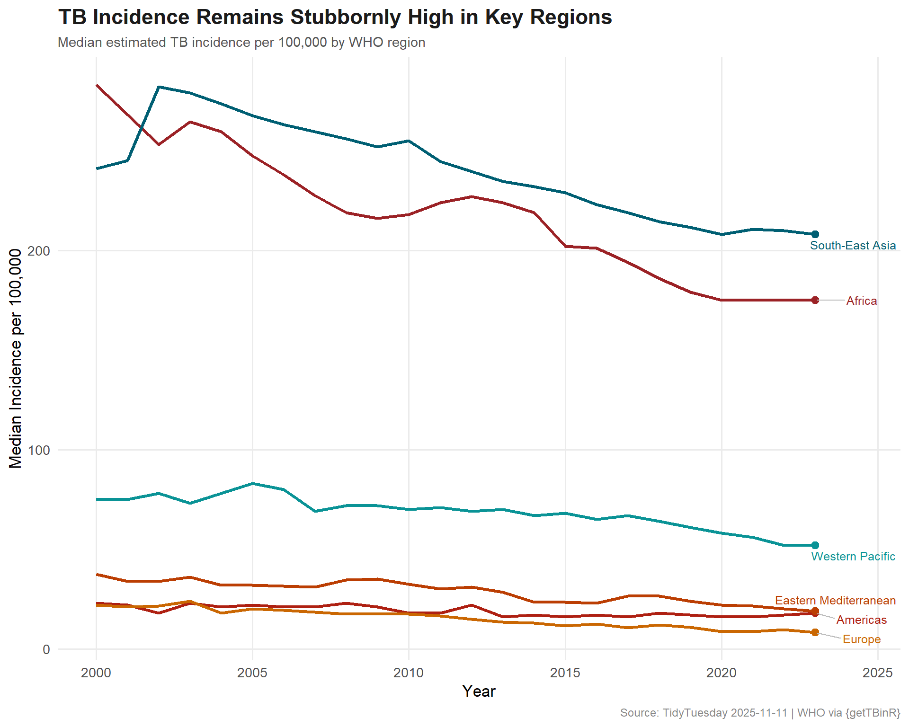
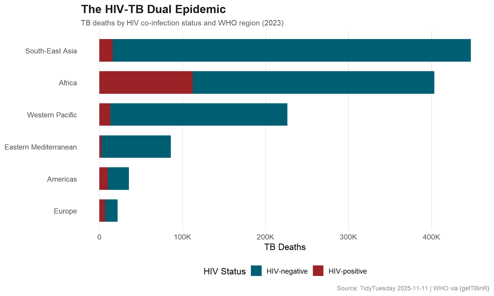

Tracking the global tuberculosis burden through WHO data — which regions carry the heaviest load, how has mortality shifted over time, and what role does HIV co-infection play?
Global tuberculosis burden estimates from the World Health Organization, curated via the getTBinR R package. Tuberculosis remains one of the world’s deadliest infectious diseases — WHO estimates that 10.6 million people fell ill with TB in 2021, and 1.6 million died from the disease.
Are there years showing unusual TB metric spikes or drops globally?
How does TB mortality differ between HIV-positive and HIV-negative populations?
Which regions demonstrate consistently high TB burden across multiple years?
Loading necessary packages
My handy booster pack that allows me to install (if needed) and load my usual and favorite packages, as well as some helpful functions.
raw <- tidytuesdayR::tt_load('2025-11-11')tb <- raw$who_tb_data
Exploratory Data Analysis
The my_skim() function is a modified version of the skimr::skim() function that returns the number of missing data points (cells as NA) as well as the inverse (e.g.: number of rows that are notNA), the count, minimum, 25%, median, 75%, max, mean, geometric mean, and standard deviation. It also generates a little ASCII histogram. Neat!
TB Burden
tb %>%my_skim(.)
Data summary
Name
Piped data
Number of rows
5117
Number of columns
18
_______________________
Column type frequency:
character
4
numeric
14
________________________
Group variables
None
Variable type: character
skim_variable
n_missing
complete_rate
min
max
empty
n_unique
whitespace
country
0
1
4
56
0
215
0
g_whoregion
0
1
6
21
0
6
0
iso2
0
1
2
4
0
215
0
iso3
0
1
3
3
0
215
0
Variable type: numeric
skim_variable
n_missing
complete_rate
n
min
p25
med
p75
max
mean
geo_mean
sd
hist
iso_numeric
0
1.00
5117
4
212.00
430.00
646.00
894
431.79
315.72
253.11
▇▇▇▇▆
year
0
1.00
5117
2000
2006.00
2012.00
2018.00
2023
2011.56
2011.55
6.91
▇▇▆▇▇
c_cdr
293
0.94
5117
0
60.00
80.00
87.00
240
73.36
70.45
19.44
▁▇▁▁▁
c_newinc_100k
185
0.96
5117
0
10.00
36.00
95.00
947
73.33
33.09
104.03
▇▁▁▁▁
cfr
128
0.97
5117
0
0.08
0.11
0.22
1
0.16
0.12
0.13
▇▂▁▁▁
e_inc_100k
0
1.00
5117
0
12.00
46.00
160.00
1590
122.49
45.27
183.69
▇▁▁▁▁
e_inc_num
0
1.00
5117
0
210.00
2900.00
17000.00
3590000
52027.21
1973.33
250579.80
▇▁▁▁▁
e_mort_100k
24
1.00
5117
0
0.96
4.50
23.00
533
25.44
5.27
53.26
▇▁▁▁▁
e_mort_exc_tbhiv_100k
24
1.00
5117
0
0.85
3.80
19.00
188
14.44
4.14
22.34
▇▁▁▁▁
e_mort_exc_tbhiv_num
24
1.00
5117
0
15.00
210.00
1700.00
786000
6631.70
230.91
37001.66
▇▁▁▁▁
e_mort_num
24
1.00
5117
0
18.00
260.00
2800.00
979000
8975.11
294.52
45867.33
▇▁▁▁▁
e_mort_tbhiv_100k
24
1.00
5117
0
0.01
0.19
2.20
481
10.95
0.69
38.68
▇▁▁▁▁
e_mort_tbhiv_num
24
1.00
5117
0
0.00
16.00
340.00
223000
2333.54
92.96
12056.61
▇▁▁▁▁
e_pop_num
0
1.00
5117
1552
762582.00
5939341.00
21547461.00
1438069593
33406512.96
3624185.87
131759733.15
▇▁▁▁▁
tb %>% dplyr::count(g_whoregion, sort =TRUE)
# A tibble: 6 × 2
g_whoregion n
<chr> <int>
1 Europe 1286
2 Africa 1117
3 Americas 1060
4 Western Pacific 888
5 Eastern Mediterranean 528
6 South-East Asia 238
In the African region, HIV-associated TB mortality accounts for a substantial share of all TB deaths — a dual epidemic that demands integrated treatment programs addressing both diseases simultaneously.
# A tibble: 10 × 6
country g_whoregion e_inc_num e_inc_100k e_mort_100k c_cdr
<chr> <chr> <dbl> <dbl> <dbl> <dbl>
1 India South-East… 2800000 195 22 85
2 Indonesia Western Pa… 1090000 387 47 74
3 China Western Pa… 741000 52 1.9 76
4 Philippines Western Pa… 739000 643 32 78
5 Pakistan Eastern Me… 686000 277 20 69
6 Nigeria Africa 499000 219 31 74
7 Bangladesh South-East… 379000 221 26 80
8 Democratic Republic of th… Africa 334000 316 41 77
9 Myanmar South-East… 302000 558 90 43
10 South Africa Africa 270000 427 88 79
Visualizing the Global TB Burden
# Public health palette — clinical but humanregion_cols <-c("#9B2226", # deep red"#AE2012", # rust"#BB3E03", # dark orange"#CA6702", # amber"#005F73", # deep teal"#0A9396"# teal)ggplot(regional_trend, aes(x = year, y = median_incidence, color = g_whoregion)) +geom_line(linewidth =1.1) +geom_point(data = regional_trend %>%group_by(g_whoregion) %>%slice_max(year, n =1),size =2.5 ) +geom_text_repel(data = regional_trend %>%group_by(g_whoregion) %>%slice_max(year, n =1),aes(label = g_whoregion),nudge_x =1.5,size =3.3,direction ="y",segment.color ="#BBBBBB" ) +scale_color_manual(values = region_cols) +scale_y_continuous(labels = scales::comma) +labs(title ="TB Incidence Remains Stubbornly High in Key Regions",subtitle ="Median estimated TB incidence per 100,000 by WHO region",x ="Year",y ="Median Incidence per 100,000",caption ="Source: TidyTuesday 2025-11-11 | WHO via {getTBinR}" ) +theme_minimal(base_size =13) +theme(plot.title =element_text(face ="bold", size =17, color ="#1B1B1B"),plot.subtitle =element_text(size =11, color ="#555555"),plot.caption =element_text(size =9, color ="#888888"),legend.position ="none",panel.grid.minor =element_blank() )

hiv_long <- hiv_tb %>%select(g_whoregion, year, mort_hiv_pos, mort_hiv_neg) %>%pivot_longer(cols =starts_with("mort_"),names_to ="hiv_status",values_to ="deaths" ) %>%mutate(hiv_label =ifelse(hiv_status =="mort_hiv_pos", "HIV-positive", "HIV-negative") )# Focus on latest yearhiv_latest <- hiv_long %>%filter(year ==max(year)) %>%group_by(g_whoregion) %>%mutate(total =sum(deaths), pct = deaths / total) %>%ungroup() %>%mutate(g_whoregion =fct_reorder(g_whoregion, total))hiv_cols <-c("HIV-positive"="#9B2226", "HIV-negative"="#005F73")ggplot(hiv_latest, aes(x = g_whoregion, y = deaths, fill = hiv_label)) +geom_col(width =0.7) +scale_y_continuous(labels = scales::label_number(scale_cut = scales::cut_short_scale())) +scale_fill_manual(values = hiv_cols, name ="HIV Status") +coord_flip() +labs(title ="The HIV-TB Dual Epidemic",subtitle =paste0("TB deaths by HIV co-infection status and WHO region (", max(hiv_tb$year), ")"),x =NULL,y ="TB Deaths",caption ="Source: TidyTuesday 2025-11-11 | WHO via {getTBinR}" ) +theme_minimal(base_size =13) +theme(plot.title =element_text(face ="bold", size =17, color ="#1B1B1B"),plot.subtitle =element_text(size =11, color ="#555555"),plot.caption =element_text(size =9, color ="#888888"),legend.position ="bottom",panel.grid.major.y =element_blank(),panel.grid.minor =element_blank() )

Final thoughts and takeaways
Tuberculosis is a disease of inequality. The data shows that TB burden clusters overwhelmingly in the South-East Asia and African regions, where poverty, overcrowding, and weak health systems create perfect conditions for transmission. Despite being both preventable and curable, TB kills more than 1.5 million people annually — making it the world’s deadliest infectious disease alongside COVID-19.
The HIV-TB co-infection story is particularly stark in sub-Saharan Africa, where the two epidemics feed on each other. HIV weakens the immune system, making TB infection more likely to progress to active disease. TB, in turn, accelerates HIV progression. Integrated treatment programs that address both diseases simultaneously have been a critical public health innovation.
Tip
The case detection rate (c_cdr) is a crucial indicator that often gets overlooked. A country can have high incidence but low detection — meaning people are getting sick but not being diagnosed or treated. This “missing” TB is both a humanitarian crisis and an ongoing transmission risk.